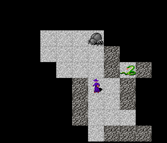
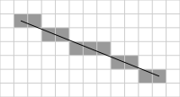
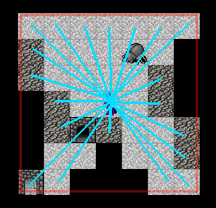

Haskell roguelike - Field of view
Field of view
In most roguelike games you need to calculate the actor’s fields of view, i.e. how far they can see from where they currently are and is anything blocking their line of site in any direction.
Below is what the fov logic added in this chapter will look like.

You should be able to see that
- The player has a fov distance of three tiles in all directions.
- Some entities are transparent e.g. an open door.
- Some entities are not transparent and block the fov, e.g. a wall
- Each time the player moves the fov is updated and redrawn
Implementing fov
There are numerous options for fov algorithms. The Field of Vision has a nice set of options if you are looking for alternatives.
I decided to use Bresenham’s line algorithm. It is fast and simple enough to see how it works. The algorithm calculates how to draw a strait line on a “pixelated” surface. In a roguelike the tiles count as pixels.

To calculate an actor’s fov the process is roughly as follows
- Calculate the bounding box. I.e. the maximum possible distance the actor could see if nothing blocked the way. (In the image below this is the red square)
- Use Bresenham’s line algorithm to trace a line to each tile in the bounding square
- Stop tracing each line when it gets to the bounding block or if the current tile is not transparent.
- The set of all visited points is then where the actor can see

Bresenham’s line algorithm
I got the original haskell code from wiki.haskell and made a few minor changes. This will give us an list of (x, y) for each line we trace to the bounding tiles.
10_fov/src/GameEngine.hs (554 to 580)
-- | Bresenham's algorithm
-- | https://wiki.haskell.org/Bresenham%27s_line_drawing_algorithm
bline :: (Int, Int) -> (Int, Int) -> [(Int, Int)]
bline pa@(xa, ya) pb@(xb, yb) =
let r = map maySwitch . Lst.unfoldr go $ (x1, y1, 0) in
case r of
(p:_) | p == pa -> r
_ -> Lst.reverse r
where
steep = abs (yb - ya) > abs (xb - xa)
maySwitch = if steep then (\(x,y) -> (y,x)) else identity
((x1, y1), (x2, y2)) = case Lst.sort [maySwitch pa, maySwitch pb] of
[a, b] -> (a, b)
_ -> ((0, 0), (0, 0)) -- This case is never matched, but fixes partial match warning
deltax = x2 - x1
deltay = abs (y2 - y1)
ystep = if y1 < y2 then 1 else -1
go (xTemp, yTemp, err)
| xTemp > x2 = Nothing
| otherwise = Just ((xTemp, yTemp), (xTemp + 1, newY, newError))
where
tempError = err + deltay
(newY, newError) = if (2 * tempError) >= deltax
then (yTemp + ystep, tempError - deltax)
else (yTemp, tempError)Bounding box
10_fov/src/GameEngine.hs (542 to 549)
-- | Get the bounds for a fov distance
boundingPoints :: Int -> WorldPos -> [WorldPos]
boundingPoints distance (WorldPos (atx, aty)) =
Lst.nub $
[WorldPos (atx - distance + d, aty - distance) | d <- [0..distance * 2]] <>
[WorldPos (atx - distance, aty - distance + d) | d <- [0..distance * 2]] <>
[WorldPos (atx - distance + d, aty + distance) | d <- [0..distance * 2]] <>
[WorldPos (atx + distance, aty - distance + d) | d <- [0..distance * 2]]The code above is calculating each point in the bounding box. Lets look at how it works
(atx, aty)is the actors current position- Each of the four list comprehensions draws one side of the square
[0..distance * 2]. The* 2is because the fov isdistancetiles to both sides of the actor. E.g for a distance of 3, this generates[0,1,2,3,4,5,6]- At each side you start at a the far end of the fov and move towards the other end.
The code does this for all four sides, combines the results and removes any duplicates.
E.g. For a starting position of (100, 10)
[(atx - distance + d, aty - distance) | d <- [0..distance * 2]]
Generates
[(97,7),(98,7),(99,7),(100,7),(101,7),(102,7),(103,7)]
I.e. it is drawing the bounding left line from top to bottom.
Fov
As mentioned above once we have the bounding box, we then need to trace all lines from the actor to each point on the bounding box.
10_fov/src/GameEngine.hs (524 to 537)
-- | Calculate the field of view from a position
calcFov :: Int -> (WorldPos -> Bool) -> WorldPos -> [(WorldPos, [WorldPos])]
calcFov fovDistance isEntityTransparent fromPos'@(WorldPos fromPos) =
let boundries = getBoundries fromPos' in
go <$> boundries
where
getBoundries (WorldPos (x, y)) = boundingPoints fovDistance (WorldPos (x, y))
go toPos'@(WorldPos toPos) =
let line = WorldPos <$> bline fromPos toPos in
let isTransparentOrStart p = p == fromPos' || isEntityTransparent p in
let (m, r) = Lst.span isTransparentOrStart line in
(toPos', m <> Lst.take 1 r)calcFov does exactly that.
- Gets the bounding box
- For each point on the boundary, draw a line from the actor to the point.
- Keep every point in the line that is transparent, or is the starting point. Stop as soon as its not
In the go function that is called for each line, Data.List.span is used to find the visible part of the line.
-- https://hackage.haskell.org/package/base/docs/Data-List.html#v:span
-- span, applied to a predicate p and a list xs, returns a tuple where first
-- element is longest prefix (possibly empty) of xs of elements that satisfy p
-- and second element is the remainder of the list
--
-- span p xs is equivalent to (takeWhile p xs, dropWhile p xs)
--
span :: (a -> Bool) -> [a] -> ([a], [a])This code
First gets a tuple of (transparent_points, not_transparent_points). It then takes one from the not_transparent_points and adds it to the result. This is done as the actor can see the tile that blocks the light, but not past it.
For now isTransparent says everything apart from walls are transparent. Later on we’ll add closed doors etc.
10_fov/src/GameEngine.hs (585 to 589)
isTransparent :: Map WorldPos Entity -> WorldPos -> Bool
isTransparent wmap pos =
case Map.lookup pos wmap of
Nothing -> True
Just e -> (e ^. enType) /= E.WallflatFov is a helper function to get a unique list of coordinates in the field of view from the list of lines.
10_fov/src/GameEngine.hs (613 to 615)
flatFov :: Maybe [(WorldPos, [WorldPos])] -> [WorldPos]
flatFov Nothing = []
flatFov (Just fov) = Lst.nub . Lst.concat $ snd <$> fovActor changes
Actors gets two new properties
10_fov/src/GameCore.hs (32 to 33)
- acFov is the current field of view
- acFovDistance is how far each actor can see. This means that each actor can have a different fov distance. In this example the player can see for three tiles, and enemies can only see for two tiles.
Updating the fov
Adding actors
Each actor’s fov must be kept up to date. To keep things simple I’m updating the fov when an actor is added and each time an actor moves.
10_fov/src/GameEngine.hs (435 to 437)
updateActorFov :: World -> Actor -> Actor
updateActorFov w a =
a & acFov .~ Just (calcFov (a ^. acFovDistance) (isTransparent $ w ^. wdMap) (a ^. acWorldPos))At the end of bootWorld we call updateActorFov for all actors.
10_fov/src/GameEngine.hs (81 to 98)
bootWorld :: Host.Connection -> (Int, Int) -> Text -> Rnd.StdGen -> World
bootWorld conn screenSize mapData std =
let
config = mkConfig
bug = mkEnemyActor "bug1" E.Bug (6, -2)
snake = mkEnemyActor "snake1" E.Snake (8, -4)
w1 = World { _wdPlayer = mkPlayer
, _wdConfig = config
, _wdMap = loadWorld E.loadTexts mapData
, _wdActors = Map.fromList [ (bug ^. acId, bug)
, (snake ^. acId, snake)
]
}
in
-- Calculate the actors fov
updateAllActors w1 updateActorFov10_fov/src/GameEngine.hs (450 to 455)
-- | Update all actors, including the player's actor
updateAllActors :: World -> (World -> Actor -> Actor) -> World
updateAllActors w fn =
let w2 = w & (wdPlayer . plActor) %~ fn w in
let w3 = w2 & wdActors %~ fmap (fn w2) in
w3Moving actors
tryMoveActor is also update to call updateActorFov
10_fov/src/GameEngine.hs (422 to 431)
if canMove
then
let
movedActor = actor & acWorldPos .~ tryWorldTo'
w2 = updatePlayerViewport $ updateActor world movedActor
pa = w2 ^. wdPlayer ^. plActor
in
Just $ updateActor w2 (updateActorFov w2 pa)
else
NothingDrawing darkness
Darkness tile
We need a tile to use to draw the “darkness”. This is a tile that is 100% black.
10_fov/src/Entities.hs (26 to 26)
Darkness overlay
When the tiles are drawn we now need to only show tiles that the player can see, i.e. tiles in their fov. We could use another layer for this, but its pointless to draw a layer and then immediately hide the tiles. Instead an overlay is used to replace any tiles that are not visible.
10_fov/src/GameEngine.hs (594 to 608)
darknessFovOverlay :: Player -> Actor -> Map PlayerPos Tile
darknessFovOverlay player actor =
let
(screenWidth, screenHeight) = player ^. plScreenSize
-- Create a full grid of darkness
blackBg = Map.fromList [ (PlayerPos (x, y), E.getTile E.Dark)
| x <- [0..(screenWidth - 1)]
, y <- [0..(screenHeight - 1)]
]
lightAt = worldCoordToPlayer (player ^. plWorldTopLeft) <$> flatFov (actor ^. acFov)
in
-- Remove the darkness overlay at any position that is to be lit
foldr Map.delete blackBg lightAt- Create a map *blackBg that is 100% full of darkness tiles.
- Create a list of positions that are visible in lightAt
- Delete all positions in the blackBg map that are in the lightAt list
The foldr line could have been written more explicitly like this
But foldr provides the arguments in the correct order for Map.delete so there is no need for that.
Drawing
And finally drawTilesForPlayer can be changed to draw the darkness overlay. Take a look at the diff below, it should help put these changes in context. I’ll highlight the main changes below.
10_fov/src/GameEngine.hs (278 to 333)
drawTilesForPlayer :: World -> Map WorldPos Entity -> [Map PlayerPos Tile]
drawTilesForPlayer world entityMap =
let
-- Entity base layer
entities = mkLayer entityMap
-- Darkness
darknessOverlay = darknessFovOverlay (world ^. wdPlayer) (world ^. wdPlayer ^. plActor)
-- Darkness hides entity
baseLayer = Map.union darknessOverlay entities
-- Actor layer on top
actorMap = Map.fromList $ (\a -> (a ^. acWorldPos, a ^. acEntity)) <$> getAllActors world
inViewActors = Map.filterWithKey inView actorMap
actorLayer = mkLayer inViewActors
visibleActorLayer = Map.filterWithKey (\wp _ -> isNotDarkness wp baseLayer) actorLayer
in
-- Layers
-- 0: Entities (with darkness overlay)
-- 1: Actors
[baseLayer, visibleActorLayer]
where
player = world ^. wdPlayer
-- Top left of player's grid
(WorldPos (topX, topY)) = player ^. plWorldTopLeft
-- Players screen/grid dimensions
(screenX, screenY) = player ^. plScreenSize
-- Bottom right corner
(bottomX, bottomY) = (topX + screenX, topY - screenY)
isNotDarkness :: PlayerPos -> Map PlayerPos Tile -> Bool
isNotDarkness wp ts =
case Map.lookup wp ts of
Nothing -> True
Just t -> t ^. tlId /= E.getTile E.Dark ^. tlId
inView (WorldPos (x, y)) _ =
x >= topX && x < bottomX && y > bottomY && y <= topY
mkLayer :: Map WorldPos Entity -> Map PlayerPos Tile
mkLayer entities =
let
-- Filter out blank
noEmptyMap = Map.filter (\e -> e ^. enTile ^. tlName /= "blank") entities
-- Only get the entitys that are at positions on the player's screen
visibleEntitys = Map.filterWithKey inView noEmptyMap
-- Get the tile for each entity
tileMap = (^. enTile) <$> visibleEntitys
in
-- Get it with player positions
Map.mapKeys (worldCoordToPlayer $ player ^. plWorldTopLeft) tileMapThe entities base layer contains the entities and the darkness overlay. Map.union is used to combine the two map. Since Map.union prefers the first map over the second, this means that entities are only selected if the tiles is not dark.
10_fov/src/GameEngine.hs (282 to 287)
-- Entity base layer
entities = mkLayer entityMap
-- Darkness
darknessOverlay = darknessFovOverlay (world ^. wdPlayer) (world ^. wdPlayer ^. plActor)
-- Darkness hides entity
baseLayer = Map.union darknessOverlay entitiesThe actor layer is already filtered to only select actors in the view port. Now we need to also only select actors that are not hidden by the darkness layer.
10_fov/src/GameEngine.hs (291 to 295)
-- Actor layer on top
actorMap = Map.fromList $ (\a -> (a ^. acWorldPos, a ^. acEntity)) <$> getAllActors world
inViewActors = Map.filterWithKey inView actorMap
actorLayer = mkLayer inViewActors
visibleActorLayer = Map.filterWithKey (\wp _ -> isNotDarkness wp baseLayer) actorLayer10_fov/src/GameEngine.hs (318 to 322)
isNotDarkness :: PlayerPos -> Map PlayerPos Tile -> Bool
isNotDarkness wp ts =
case Map.lookup wp ts of
Nothing -> True
Just t -> t ^. tlId /= E.getTile E.Dark ^. tlIdAnd the layers are then returned as they were before, except of course that now the base layer also has the darkness tiles.
10_fov/src/GameEngine.hs (298 to 302)
Chapters
Changes
src/Entities.hs
diff -w -B -a -d -u -b --new-file 09_viewport_scroll/src/Entities.hs 10_fov/src/Entities.hs
--- 09_viewport_scroll/src/Entities.hs
+++ 10_fov/src/Entities.hs
@@ -22,6 +22,9 @@
, (E.Player , ( 8, 3), Nothing)
, (E.Bug , (25, 3), Nothing)
, (E.Snake , (38, 4), Nothing)
+
+ , (E.Dark , (43, 11), Nothing)
+
]
in
let mkData (typ, pos@(x, y), l) (tiles', entities', loads') =
src/EntityType.hs
diff -w -B -a -d -u -b --new-file 09_viewport_scroll/src/EntityType.hs 10_fov/src/EntityType.hs
--- 09_viewport_scroll/src/EntityType.hs
+++ 10_fov/src/EntityType.hs
@@ -11,5 +11,6 @@
| Player
| Bug
| Snake
+ | Dark
| Unknown
deriving (Show, Eq, Ord)
src/GameCore.hs
diff -w -B -a -d -u -b --new-file 09_viewport_scroll/src/GameCore.hs 10_fov/src/GameCore.hs
--- 09_viewport_scroll/src/GameCore.hs
+++ 10_fov/src/GameCore.hs
@@ -28,8 +28,11 @@
, _acEntity :: !Entity
, _acWorldPos :: !WorldPos
, _acStdGen :: !Rnd.StdGen
- }
+ , _acFov :: !(Maybe [(WorldPos, [WorldPos])])
+ , _acFovDistance :: !Int
+
+ }
data Player = Player { _plConn :: !Host.Connection
, _plActor :: !Actor
src/GameEngine.hs
diff -w -B -a -d -u -b --new-file 09_viewport_scroll/src/GameEngine.hs 10_fov/src/GameEngine.hs
--- 09_viewport_scroll/src/GameEngine.hs
+++ 10_fov/src/GameEngine.hs
@@ -7,6 +7,7 @@
import Protolude hiding (Map)
import Data.Map.Strict (Map)
import qualified Data.Map.Strict as Map
+import qualified Data.List as Lst
import qualified Data.List.Index as Lst
import qualified Data.Text as Txt
import qualified Data.Text.IO as Txt
@@ -76,21 +77,27 @@
Right $ bootWorld conn (width, height) mapData std
+
bootWorld :: Host.Connection -> (Int, Int) -> Text -> Rnd.StdGen -> World
bootWorld conn screenSize mapData std =
let
config = mkConfig
bug = mkEnemyActor "bug1" E.Bug (6, -2)
snake = mkEnemyActor "snake1" E.Snake (8, -4)
- in
- World { _wdPlayer = mkPlayer
+ w1 = World { _wdPlayer = mkPlayer
, _wdConfig = config
, _wdMap = loadWorld E.loadTexts mapData
, _wdActors = Map.fromList [ (bug ^. acId, bug)
, (snake ^. acId, snake)
]
}
+ in
+
+ -- Calculate the actors fov
+ updateAllActors w1 updateActorFov
+
+
where
mkConfig =
Config { _cfgKeys = Map.fromList [ ("up" , "Move:up")
@@ -130,13 +134,14 @@
, _plViewPortStyle = ViewPortBorder 2
}
-
mkPlayersActor =
Actor { _acId = Aid "player"
, _acClass = ClassPlayer
, _acEntity = E.getEntity E.Player
, _acWorldPos = WorldPos (1, -1)
, _acStdGen = std
+ , _acFovDistance = 3
+ , _acFov = Nothing
}
mkEnemyActor aid e (x, y) =
@@ -145,6 +150,8 @@
, _acEntity = E.getEntity e
, _acWorldPos = WorldPos (x, y)
, _acStdGen = std
+ , _acFovDistance = 2
+ , _acFov = Nothing
}
@@ -270,15 +278,29 @@
drawTilesForPlayer :: World -> Map WorldPos Entity -> [Map PlayerPos Tile]
drawTilesForPlayer world entityMap =
let
+
-- Entity base layer
- entityLayer = mkLayer entityMap
+ entities = mkLayer entityMap
+ -- Darkness
+ darknessOverlay = darknessFovOverlay (world ^. wdPlayer) (world ^. wdPlayer ^. plActor)
+ -- Darkness hides entity
+ baseLayer = Map.union darknessOverlay entities
+
+
-- Actor layer on top
actorMap = Map.fromList $ (\a -> (a ^. acWorldPos, a ^. acEntity)) <$> getAllActors world
- visibleActorMap = Map.filterWithKey inView actorMap
- actorLayer = mkLayer visibleActorMap
+ inViewActors = Map.filterWithKey inView actorMap
+ actorLayer = mkLayer inViewActors
+ visibleActorLayer = Map.filterWithKey (\wp _ -> isNotDarkness wp baseLayer) actorLayer
+
+
in
- [entityLayer, actorLayer]
+ -- Layers
+ -- 0: Entities (with darkness overlay)
+ -- 1: Actors
+ [baseLayer, visibleActorLayer]
+
where
player = world ^. wdPlayer
@@ -292,6 +314,14 @@
-- Bottom right corner
(bottomX, bottomY) = (topX + screenX, topY - screenY)
+
+ isNotDarkness :: PlayerPos -> Map PlayerPos Tile -> Bool
+ isNotDarkness wp ts =
+ case Map.lookup wp ts of
+ Nothing -> True
+ Just t -> t ^. tlId /= E.getTile E.Dark ^. tlId
+
+
inView (WorldPos (x, y)) _ =
x >= topX && x < bottomX && y > bottomY && y <= topY
@@ -391,14 +418,26 @@
([], Nothing) -> True
_ -> False
in
+
if canMove
then
- let movedActor = actor & acWorldPos .~ tryWorldTo' in
- Just . updatePlayerViewport $ updateActor world movedActor
+ let
+ movedActor = actor & acWorldPos .~ tryWorldTo'
+ w2 = updatePlayerViewport $ updateActor world movedActor
+ pa = w2 ^. wdPlayer ^. plActor
+ in
+ Just $ updateActor w2 (updateActorFov w2 pa)
else
Nothing
+
+updateActorFov :: World -> Actor -> Actor
+updateActorFov w a =
+ a & acFov .~ Just (calcFov (a ^. acFovDistance) (isTransparent $ w ^. wdMap) (a ^. acWorldPos))
+
+
+
-- | Update either the player's actor, or one of the world actors
updateActor :: World -> Actor -> World
updateActor w actor =
@@ -408,6 +447,15 @@
+-- | Update all actors, including the player's actor
+updateAllActors :: World -> (World -> Actor -> Actor) -> World
+updateAllActors w fn =
+ let w2 = w & (wdPlayer . plActor) %~ fn w in
+ let w3 = w2 & wdActors %~ fmap (fn w2) in
+ w3
+
+
+
-- | Update the player's view port
updatePlayerViewport :: World -> World
updatePlayerViewport w =
@@ -482,3 +520,97 @@
(x, y)
+
+-- | Calculate the field of view from a position
+calcFov :: Int -> (WorldPos -> Bool) -> WorldPos -> [(WorldPos, [WorldPos])]
+calcFov fovDistance isEntityTransparent fromPos'@(WorldPos fromPos) =
+ let boundries = getBoundries fromPos' in
+ go <$> boundries
+
+ where
+ getBoundries (WorldPos (x, y)) = boundingPoints fovDistance (WorldPos (x, y))
+
+ go toPos'@(WorldPos toPos) =
+ let line = WorldPos <$> bline fromPos toPos in
+ let isTransparentOrStart p = p == fromPos' || isEntityTransparent p in
+ let (m, r) = Lst.span isTransparentOrStart line in
+ (toPos', m <> Lst.take 1 r)
+
+
+
+
+-- | Get the bounds for a fov distance
+boundingPoints :: Int -> WorldPos -> [WorldPos]
+boundingPoints distance (WorldPos (atx, aty)) =
+ Lst.nub $
+ [WorldPos (atx - distance + d, aty - distance) | d <- [0..distance * 2]] <>
+ [WorldPos (atx - distance, aty - distance + d) | d <- [0..distance * 2]] <>
+ [WorldPos (atx - distance + d, aty + distance) | d <- [0..distance * 2]] <>
+ [WorldPos (atx + distance, aty - distance + d) | d <- [0..distance * 2]]
+
+
+
+
+-- | Bresenham's algorithm
+-- | https://wiki.haskell.org/Bresenham%27s_line_drawing_algorithm
+bline :: (Int, Int) -> (Int, Int) -> [(Int, Int)]
+bline pa@(xa, ya) pb@(xb, yb) =
+ let r = map maySwitch . Lst.unfoldr go $ (x1, y1, 0) in
+
+ case r of
+ (p:_) | p == pa -> r
+ _ -> Lst.reverse r
+
+ where
+ steep = abs (yb - ya) > abs (xb - xa)
+ maySwitch = if steep then (\(x,y) -> (y,x)) else identity
+ ((x1, y1), (x2, y2)) = case Lst.sort [maySwitch pa, maySwitch pb] of
+ [a, b] -> (a, b)
+ _ -> ((0, 0), (0, 0)) -- This case is never matched, but fixes partial match warning
+ deltax = x2 - x1
+ deltay = abs (y2 - y1)
+ ystep = if y1 < y2 then 1 else -1
+ go (xTemp, yTemp, err)
+ | xTemp > x2 = Nothing
+ | otherwise = Just ((xTemp, yTemp), (xTemp + 1, newY, newError))
+ where
+ tempError = err + deltay
+ (newY, newError) = if (2 * tempError) >= deltax
+ then (yTemp + ystep, tempError - deltax)
+ else (yTemp, tempError)
+
+
+
+
+isTransparent :: Map WorldPos Entity -> WorldPos -> Bool
+isTransparent wmap pos =
+ case Map.lookup pos wmap of
+ Nothing -> True
+ Just e -> (e ^. enType) /= E.Wall
+
+
+
+
+darknessFovOverlay :: Player -> Actor -> Map PlayerPos Tile
+darknessFovOverlay player actor =
+ let
+ (screenWidth, screenHeight) = player ^. plScreenSize
+
+ -- Create a full grid of darkness
+ blackBg = Map.fromList [ (PlayerPos (x, y), E.getTile E.Dark)
+ | x <- [0..(screenWidth - 1)]
+ , y <- [0..(screenHeight - 1)]
+ ]
+
+ lightAt = worldCoordToPlayer (player ^. plWorldTopLeft) <$> flatFov (actor ^. acFov)
+ in
+ -- Remove the darkness overlay at any position that is to be lit
+ foldr Map.delete blackBg lightAt
+
+
+
+
+flatFov :: Maybe [(WorldPos, [WorldPos])] -> [WorldPos]
+flatFov Nothing = []
+flatFov (Just fov) = Lst.nub . Lst.concat $ snd <$> fov
+